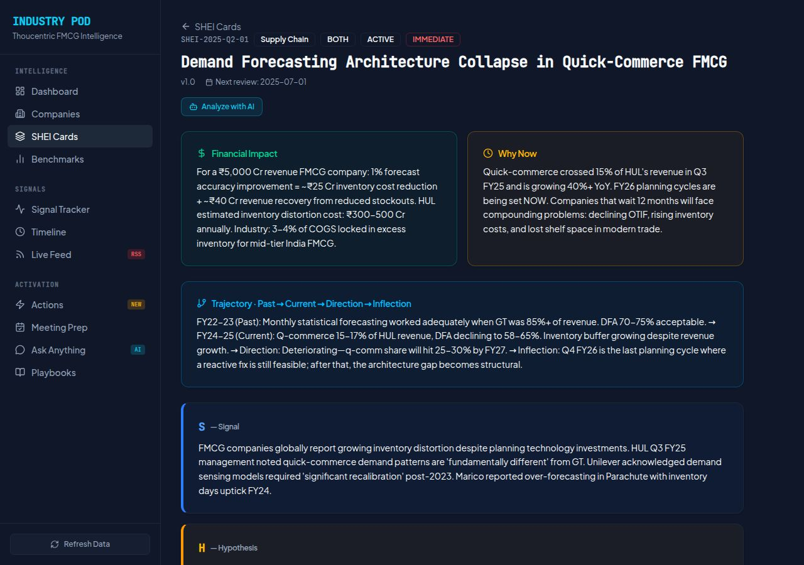
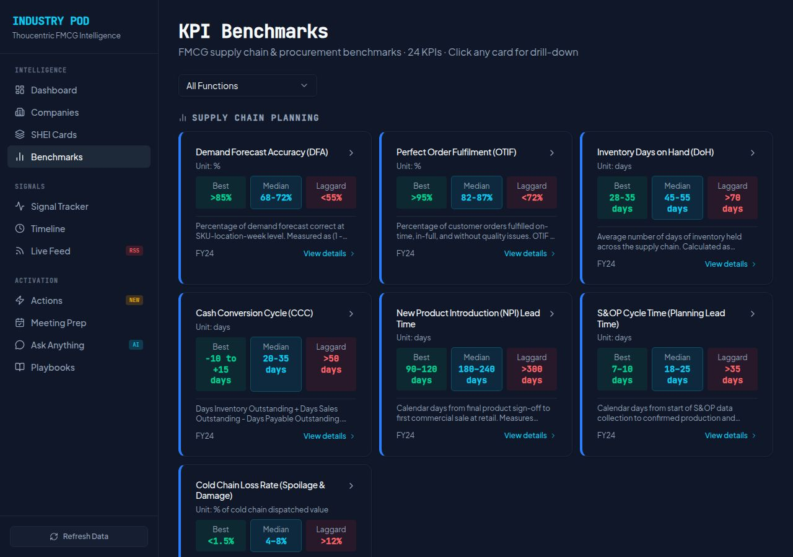
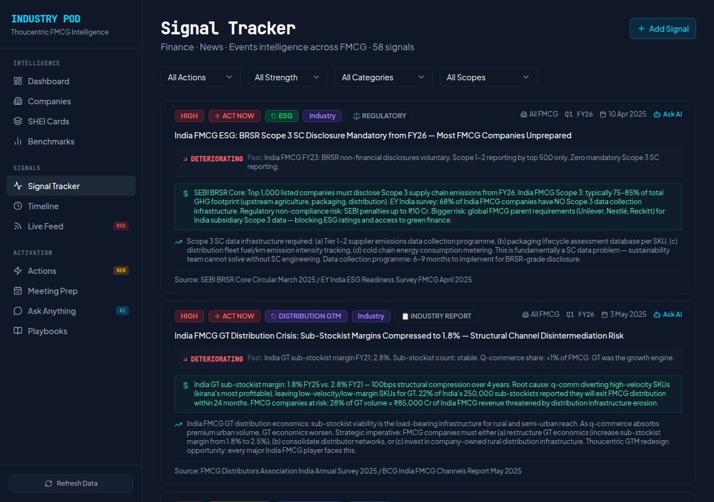
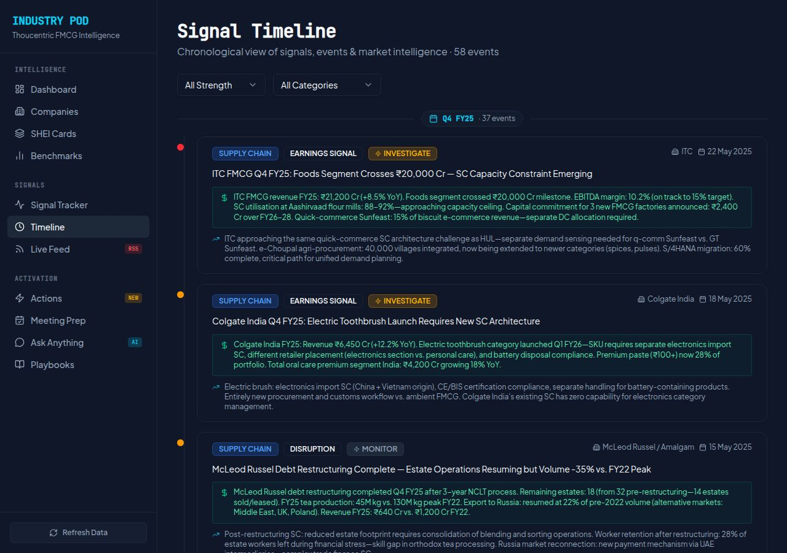
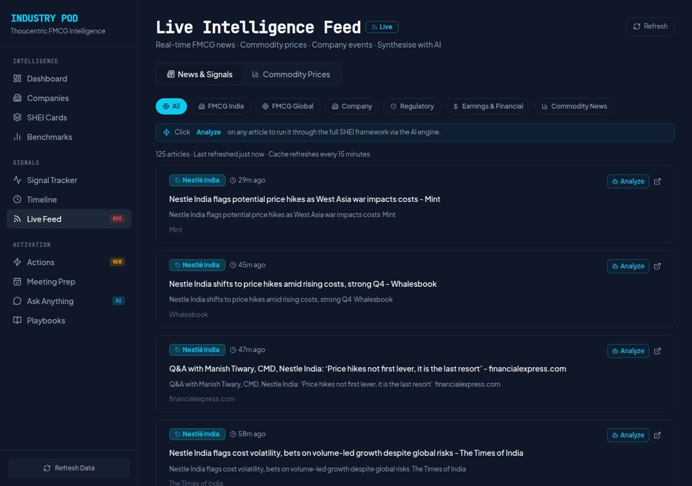
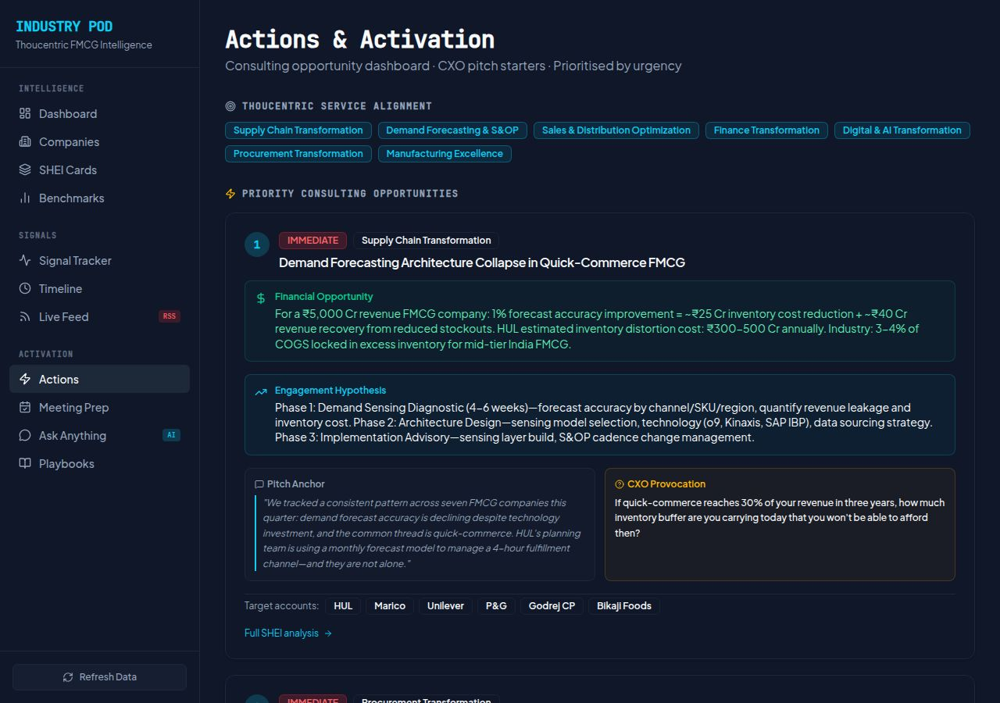
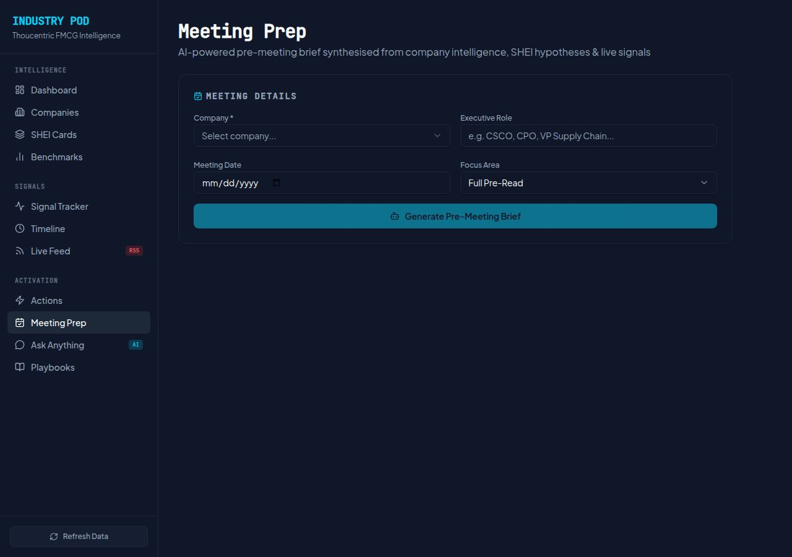
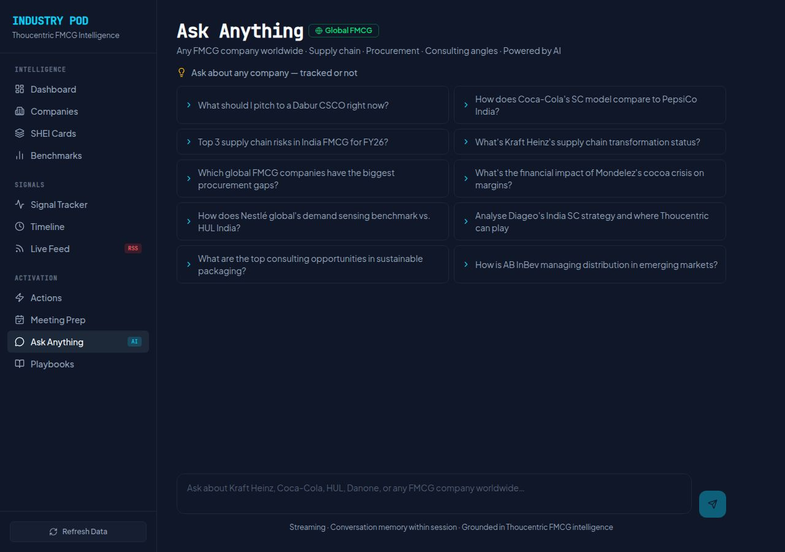
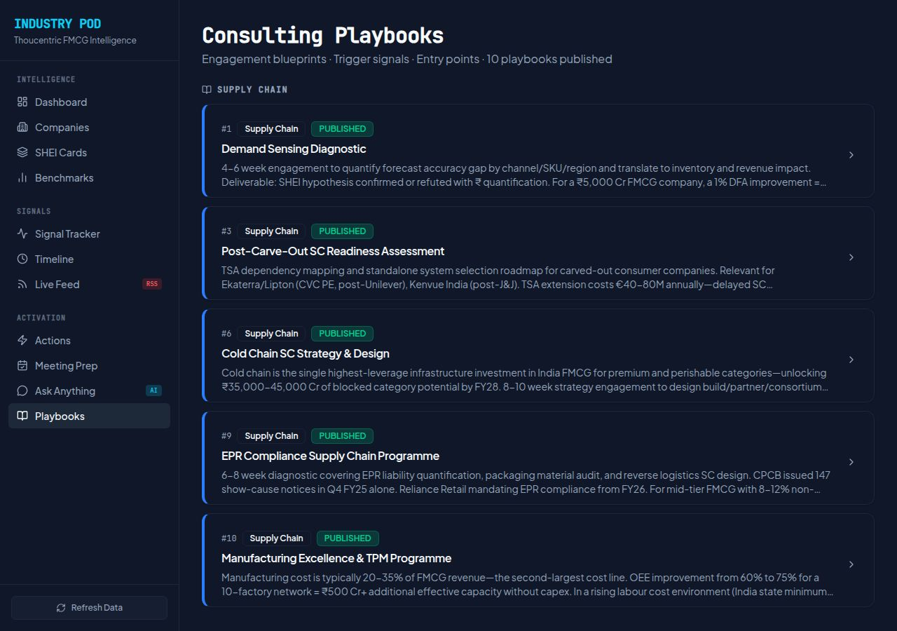

15 cards in the Signal → Hypothesis → Evidence → Implication framework. Financial impact + Why Now callouts inline. Urgency, function, and status filters.
ROUTING FIXED

SHEI Card Detail
/shei-cards/SHEI-2025-Q2-01
Full SHEI framework breakdown. Trajectory narrative: Past → Current → Direction → Inflection. Clickable company badges + benchmark annotation links. Analyze with AI.
STRING ROUTINGANALYZE WITH AICROSS-LINKS

KPI Benchmarks
/benchmarks
24 KPI benchmarks — Best / Median / Laggard ranges. Click any card for full drill-down with SHEI annotation link and Ask AI. Function filter for focused browsing.
ASK AI IN DRILL-DOWNSHEI LINK
Signals Layer

Signal Tracker
/signals
58 signals across 6 categories. Full financial impact, SC relevance, past state, trajectory, and source on each card. Ask AI per signal. Consultants can add new signals via modal.
ADD SIGNAL MODALASK AI PER SIGNAL58 SIGNALS

Signal Timeline
/timeline
Chronological view of all 58 events grouped by quarter. Colour-coded by strength. Full financial impact and SC relevance displayed inline with each event.
58 EVENTS

Live Intelligence Feed
/feeds
125+ live articles (NewsAPI) across 6 tab categories. 10 live commodity prices. Stale data detection with amber warning. 8 company-specific event feeds. Analyze any article through SHEI framework.
LIVE RSSCPO TICKER FIXEDSOURCE INFO FIXEDSTALE DETECTION
Activation Layer

Actions & Activation
/actions
Priority consulting opportunities ranked by urgency. Financial Opportunity + Engagement Hypothesis + Pitch Anchor + CXO Provocation for each. Target accounts and SHEI analysis linked.
LINKS FIXEDNEW BADGE (localStorage)

Meeting Prep 🆕
/meeting-prep
AI pre-meeting brief generator. Select company, executive role, date, and focus area. GPT-4o streams a full brief: Company Snapshot · SHEI Hypotheses · Signals · Benchmark Context · Suggested Questions · Consulting Entry Points.
NEW PAGEGPT-4o STREAMING

Ask Anything (AI)
/ask
Global FMCG knowledge AI. GPT-4o streaming with session memory. Grounded in Thoucentric intelligence. 10 suggested prompts. Prefillable from any page via Ask AI buttons throughout the platform.
GPT-4o STREAMINGPREFILL FROM ANY PAGE

Consulting Playbooks
/playbooks
10 published engagement blueprints. Trigger signals, entry points, deliverables, and financial opportunity sizing. Demand Sensing Diagnostic · Cold Chain Strategy · EPR Compliance · Manufacturing Excellence · and more.